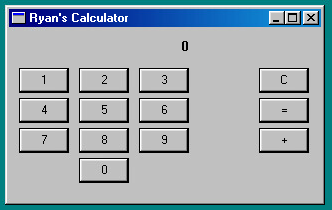

rcalc is a simple calculator for Windows 98 (might work on Windows 95?). It's purely a learning exercise for Win32 API GUI programming for retro software. Don't actually use it for anything.
I don't run this anymore, you can still read the original post on the build